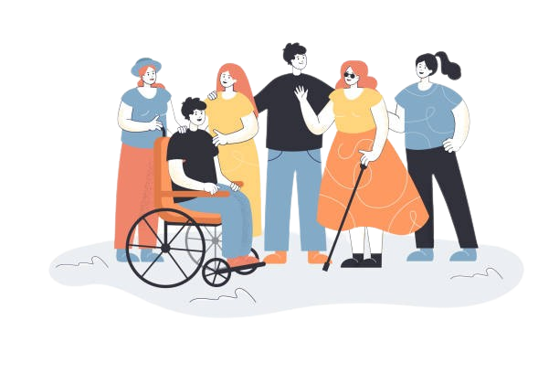

PESSOAS COM DEFICIÊNCIA, UMA EXPLORAÇÃO PROFUNDA
O que é PcD?
Conectando a Comunidade
A sigla “PcD” é a abreviação de “pessoa com deficiência”. Ela é utilizada para se referir a qualquer indivíduo que possui algum tipo de deficiência, seja ela física, mental, sensorial ou intelectual. Essa condição pode estar presente desde o nascimento ou adquirida durante a vida (após um acidente ou doença, por exemplo). O termo é utilizado desde 2006, após publicação da Convenção sobre os Direitos da Pessoa com Deficiência pela Organização das Nações Unidas (ONU). No currículo, o termo PcD identifica que o candidato possui algum tipo de deficiência e pode ser contratado para as vagas reservadas para esse público. Deve estar descrito o tipo de deficiência para que o contratante identifique uma vaga compatível e garanta a infraestrutura necessária para a sua contratação.
Baixe a extensão Vlibras clicando Aqui
Descubra o Universo PCD
Desvendando a Lei de Acessibilidade
A Lei Brasileira de Inclusão da Pessoa com Deficiência (LBI) garante seus direitos em diversos âmbitos. Conheça seus principais pontos e como ela impacta sua vida!

Tecnologia Assistiva
Descubra como as ferramentas de tecnologia assistiva podem te auxiliar na comunicação, locomoção, aprendizado e muito mais, expandindo suas possibilidades.

Superando Barreiras
Histórias inspiradoras de pessoas com deficiência que superaram desafios e alcançaram grandes feitos. Encontre a força e a motivação que você precisa para trilhar seu caminho!